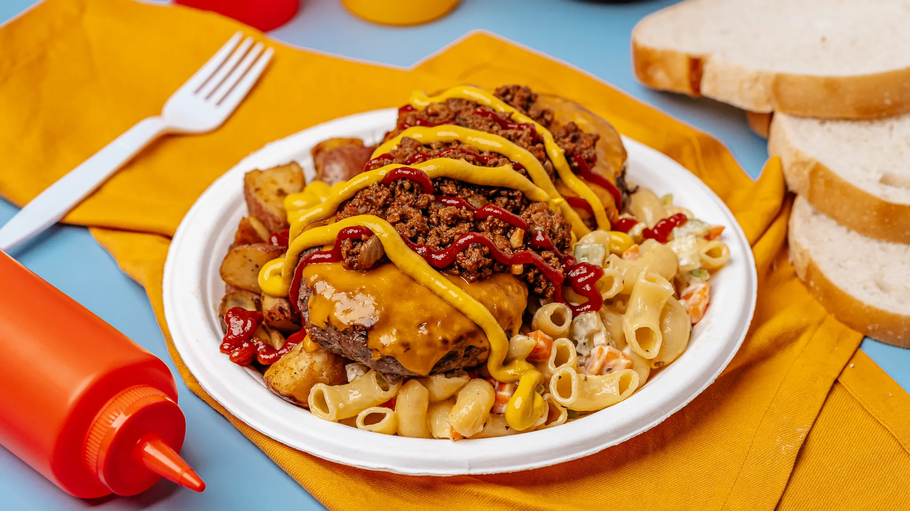

Odin Recipes
The garbage plate
Description
If you are from the Rochester area that phrase would make your mouth water. This is any drunk college kids best friend. It is a mixture of meat, carbs, and more carbs piled onto a foam container found in Nick Tahou's and "hots" food joints all over the Rochester area. For about 6 bucks (including tip) you get this plate plus a soda, not too shabby. They have a veggie version, fish, and my favorite--the white hot version. When I left the Rochester to go to school the first thing I would do when I came home was got to a "hots" and order a garbage plate. Also dont expect to finish this unless you are drunk. For more info on this delicious dish go to wikipedia.org and search garbage plate. (I put the direct link on here before but it messed up the rest of the recipe for some reason, so youre gonna have to do it the hard way lol) Also times are approx. if you make your own sauce or not. Also to speed things up I use Recipe #226112 for the potatoes. This recipe is scaled to one, but it can really feed at least four people.... but whats the fun in sharing a garbage plate??
Ingredients
- 1 - 1 1/2 cup cooked macaroni
- 1/4 cup mayonnaise
- 2 tablespoons diced celery
- 1 tablespoon chopped carrot
- 1/4 teaspoon salt
- 1/4 teaspoon pepper
- 1 large potato, baked and cubed
- 1 tablespoon butter
- 2 hamburger patties
- 2 slices cheese
- Mustard
- Horseradish
- Ketchup
- Hot chili sauce (or special sauce)
- 3 slices Italian bread
- Chopped onion (optional)
- Refried beans (optional)
Steps
Preparation Instructions
- In a large skillet, fry chopped onion and garlic in oil until soft.
- Add meat, stirring constantly with a fork to keep its texture fine.
- Once meat is cooked, add water and tomato paste. Cook for 10 minutes.
- Then add sugar and spices. Cook for 30 minutes, adding water if needed.
Assembly
- Mix together the noodles, mayo, celery, seasoning, and carrots. Place into a large square foam container (or plate, but not as authentic).
- Fry potatoes in butter until very crispy, then put them next to the macaroni salad on the plate.
- Place optional beans on the plate if needed.
- Cook hamburger until well done and top with sliced cheese.
- Place burgers on top of the macaroni salad and home fries.
- Mix together about equal parts mustard and horseradish and pour on top of burgers. Top with optional onions.
- Pour hot sauce or very large spoonfuls of special sauce and a huge glob of ketchup over burgers. Some like to stir everything together so it's one huge mess.
- Eat with a plastic fork, or just use the bread as a spoon and try not to pass out. This should take about an hour to finish.
YUM, every drunk college kid's dream food.